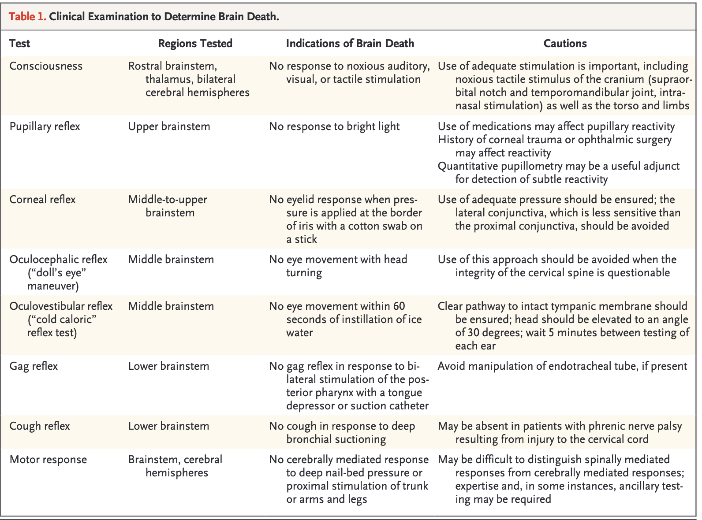

Management of Shock¶
Alex Toporex, Soibhan Kelley
Distributive Shock¶
Background¶
- Pathophysiology: severe, peripheral vasodilation
- CO/CI increased, SVR decreased, PCWP and RAP normal to low
- Etiologies: sepsis (most common), anaphylaxis, neurogenic, adrenal insufficiency, pancreatitis
- Signs/symptoms:
- Sepsis: localizing signs of infection; tachycardia, tachypnea, may be hypo/hyperthermic; POCUS with hyperdynamic cardiac function
- Anaphylaxis: history of anaphylaxis; urticaria, edema, diarrhea, wheezing on exam
- Neurogenic: history of CNS trauma; focal neurologic deficits on exam
- Adrenal insufficiency: hx chronic steroid use, may have GI symptoms, hyponatremia (common), hyperkalemia (rare), hypoglycemia, hypo/hyperthermia, NAGMA
- Pancreatitis: abdominal pain, elevated lipase, evidence on CT scan
Management¶
- Sepsis: see sepsis section
- Anaphylaxis: 0.3mg IM epinephrine ASAP to be repeated q5-15min x 3; after third IM epi, consider IVF and epi gtt if persistent hypotension. Adjuncts: albuterol nebs for bronchospasm, H1 and H2 blockers, ± glucocorticoids (methylprednisolone 1mg/kg). EPINEPHRINE SAVES LIVES.
- Neurogenic: caution with IVF resuscitation, can worsen cerebral and spinal cord edema; preferred pressors are norepinephrine and phenylephrine; for neurogenic shock 2/2 spinal cord pathology, consider higher MAP goal 85-90 mmHg
- Adrenal insufficiency: stress dose steroids with hydrocortisone 100mg IV q8hr or 50mg q6hr
- Pancreatitis: IVF + pressors; trend H/H and Ca; treat complications (necrotizing pancreatitis, abdominal compartment syndrome); address underlying etiology (see GI section)
Cardiogenic Shock¶
Background¶
- Pathophysiology: CO/CI decreased, SVR increased, PCWP and RAP elevated (left heart failure) or PCWP low/normal and RAP elevated (right heart failure)
- Etiologies: Cardiomyopathy (LHF, RHF or biventricular), arrhythmia, mechanical such as acute AR (ex: dissection) or MR (ex: ruptured papillary muscle)
Presentation¶
- Edematous, elevated JVP, cold and wet; hypoxia w/crackles and pulm edema; mixed venous sat \< 50-60%; POCUS with plump, non-compressible IVC, reduced EF, and B-lines
Management¶
See cardiogenic shock in cardiology section
Hypovolemic Shock¶
Background¶
- Etiologies: Hemorrhagic and non-hemorrhagic
- Signs/symptoms:
- Hemorrhagic: Common sources include GI, retroperitoneal (*needs high index of suspicion), traumatic, intraabdominal, thighs, thorax
- Non-hemorrhagic: 2/2 GI losses or decreased PO intake
- POCUS with thin, collapsible IVC
Management (Hemorrhagic)¶
- Ensure good access with two large-bore (at least 18G) IVs ideally in AC or above; Cordis or MAC CVC (can also use dialysis catheter, if necessary)
- Hyperacute bleed:
- 1:1:1 ratio FFP:Plt:RBC (balanced resuscitation), massive transfusion protocol (MTP)
- Monitor iCa and replete (citrated blood products will deplete Ca)
- Minimize crystalloid if possible, w/primary use to prevent immediate hemodynamic collapse (contributes to coagulopathy, hypothermia, acidemia, trauma/surgery)
- Permissive hypotension until source control/transfusions with arterial bleeds (high MAP/SBP -> clot destabilization); trend POC lactate/exam to guide
- Acute traumatic arterial bleed or post-partum hemorrhage consider TXA (1-2 gm bolus)
- Reverse anticoagulation, if applicable
- Vasopressors -> generally poorly effective, would start with norepinephrine
- Source control -> GI, IR, or EGS
- Variceal bleed: See GI Bleeding section for specific management
Management (Non-Hemorrhagic)¶
- Aggressive IVF resuscitation (balanced crystalloid); target MAP 65
- Can support BP during resuscitation with pressors (usually norepinephrine)
Obstructive Shock¶
Background¶
- Etiologies: Massive pulmonary embolism, tension pneumothorax, and cardiac tamponade
- Signs/symptoms:
- Pulmonary embolism: acute hypotension, known DVT, evidence of R heart strain on EKG, POCUS w/enlarged RV, septal bowing, McConnells sign, BNP, PE on CTA
- Tension pneumothorax: history of COPD or fibrotic lung disease, ventilated pts w/ high peak pressures, unilateral decreased BS on auscultation and tympany on percussion, POCUS without lung sliding, CXR w/ PTX and mediastinal shift
- Cardiac tamponade: elevated JVP, muffled heart sounds, pulsus paradoxus, POCUS with diastolic collapse of RV and large pericardial effusion (best in subcostal window)
Management¶
- Massive pulmonary embolism: see Pulmonary Embolism Section for specific management
- Tension PTX: needle decompression using 14-16G needle into the second intercostal space at the midclavicular line; call trauma surgery or fellow for chest tube ASAP
- Cardiac tamponade: STAT page cardiology or cardiothoracic surgery; can temporize hypotension with IVF resuscitation500-1L IVF boluses (may not work if pt is euvolemic or hypervolemic); no proven benefit from inotropy (e.g., dobutamine)
Sepsis¶
Charlie Oertli
Background¶
Most recent definition (Sepsis-3): organ dysfunction from dysregulated host response to infection
- 2021 Surviving Sepsis Guidelines: SIRS, MEWS, NEWS superior to qSOFA for screening sepsis
- SIRS 2 of any of: 1) RR>20, 2) T \<36 or >38, 3) HR >90, 4) WBC \<4 or >12 or >10% bands
- Septic Shock = sepsis + vasopressors + lactate >2 meq/dL (Sepsis 3 definition)
- Alternate screening systems you may see which are more
specific and better at prognosis of in hospital mortality
than SIRS:
- Acute change in baseline SOFA score 2: P/F ratio, Plts, Tbili, SBP, GCS, Cr
- "Quick" SOFA (qSOFA): 2 of AMS (GCS13), SBP100 mmHg, RR22/min
Evaluation¶
- Cultures prior to antibiotics if possible (but dont delay antibiotics just to get cultures)
- Consider sputum Cx, paracentesis, thoracentesis, wound Cx, LP, joint aspiration
- Lactate (even if not hypotensive)
- Imaging: x-ray, CT, or US of potential source
Management¶
Source control: Remove old lines, chest tube for empyema, drain abscesses, etc
Antibiotics
- Early antibiotics: within 1 hour if septic shock, within 3 hours if sepsis
- Target organisms most likely to cause infection in suspected organ; if source unknown, start empiric broad-spectrum
- MRSA coverage - vancomycin/daptomycin/linezolid/ceftaroline
- Pseudomonas coverage - zosyn/cefepime/meropenem /cipro/gentamicin
- Pneumonia: add atypical coverage (azithromycin/levaquin; 2nd line doxycycline if prolonged QTC or elderly) if severe or being admitted to the ICU
- Fungal coverage for Candida: if neutropenic, TPN, abdominal surgery, prior antibiotics
- De-escalation: Once source is controlled, if abx duration is unknown use procalcitonin, culture susceptibilities, and clinical evaluation to help guide de-escalation
Resuscitation
- Give 1-3 L (30 mL/kg of body weight) of IV balanced crystalloid within first 3 hours
- Only give blood if Hb \< 7, unless evidence of bleeding or myocardial ischemia
- Monitor HR, BP, mental status, urine output do NOT give beta-blockers to slow HR in the setting of sepsis unless dangerously high and limiting diastolic filling (discuss with fellow), this is an appropriate stress response
- Assess fluid responsiveness by leg raise (if BP improves with leg raise, give more fluids). Other options US IVC (mixed data), pulse pressure
Vasopressors
- Start if MAP not responsive to fluid resuscitation
- Target MAP > 65mmHg, also monitor mental status, serum lactate, and urine output; may need higher goal for pts with chronic HTN
- Start with norepinephrine -- via central line, PICC, or port. Can
run through peripheral IV (at least 18g, proximal to wrist) up to 15
mcg/min for up to 48 hours if no central access
- SOAP II trial: norepinephrine > dopamine (less arrhythmias)
- No upper limit of NE but can cause peripheral ischemia with prolonged use
- Add vasopressin at fixed dose of 0.04 units/min when NE dose >= 50
mcg/min
- VASST trial: possible benefit for pts on 5-15 of NE; however, this was opposite of hypothesis and vasopressin is expensive
- Add epinephrine or dobutamine if low cardiac output
- Add phenylephrine for pts with tachyarrhythmias (reflex bradycardia)
- Consider Angiotensin II (discuss with fellow, needs MICU leadership approval) contraindicated with CHF and DVT/PE/clots/hypercoagulability
- Consider steroids if vasopressors failing or on steroids chronically hydrocortisone 100mg IV q8hr or 50mg IV q6hr for 5 to 7 days
Temperature Abnormalities¶
Soibhan Kelley
Hypothermia¶
Background¶
- Core temperature \<35C (95F). Mild 32-35C (90-95F), moderate 28-32C (82-90F), or severe \<28C (82F) ± pulseless
- Ensure thermometer is low-reading, standard thermometers not accurate
- Core temperature can be measured w/ bladder catheter probe or esophageal probe (may be falsely if heated oxygen being delivered). Rectal temp can be used but is less accurate
- Etiologies:
- Heat loss: Environmental, burns, iatrogenic (CRRT, cold IVF, massive transfusion protocol), vasodilatory drugs/toxins
- Decreased heat production: endocrinopathies (hypothyroidism, adrenal insufficiency, hypopituitarism, hypoglycemia), thiamine deficiency
- Impaired regulation: Spinal cord injury, hypothalamic lesions, drugs (classes including antihyperglycemics, beta blockers, sedatives, ETOH, alpha agonists, general anesthetics)
- Multiple mechanisms: sepsis, pancreatitis, DKA
Evaluation¶
- Infectious work-up
- POC blood glucose, TSH/FT4, cortisol, lipase, UA, UDS, EtOH level, additional tox as appropriate, DKA work-up if relevant
- Physical exam + history for exposures and trauma
- CBC, CMP, Lactate, ABG, CK, PT/PTT, Fibrinogen
- EKG
Management¶
- Treat underlying cause [see appropriate sections]
- Mild hypothermia:
- Passive external rewarming (PER): blankets, increase ambient temperature
- Note that PER requires sufficient underlying physiologic reserve to generate heat. This is often impaired in elderly pts, malnutrition, sepsis
- Moderate hypothermia, refractory mild hypothermia, or cardiovascular
instability:
- Active external rewarming (AER): forced warm air (ie Bair Hugger), heated blankets, heat lamps, hot packs (consider burn risk)
- Severe hypothermia or refractory moderate hypothermia:
- Active core rewarming: Warmed IV crystalloid (limited rewarming potential unless large volume but will decrease ongoing losses), warmed humidified inspired air, warmed bladder lavage
- More extreme methods such as peritoneal/thoracic lavage more likely to be used in severe environmental cases in ED
- Pulseless severe hypothermia (You aren't dead unless you are warm
and dead)
- Continue CPR until re-warmed as severe hypothermia is neuroprotective and pts can have good neurologic outcomes despite hours of CPR
- ACLS medications and shocks will have poor effectiveness; prioritize circulation (i.e. chest compressions) and rewarming
- Consider ECMO (likely venoarterial if pulseless); would need transfer to CVICU
- Identify and manage complications: bradycardia/heart block, arrhythmias, shock, coagulopathy/DIC, rhabdo; rebound hyperkalemia/hypoglycemia with rewarming
Fever and Hyperthermia¶
Background¶
- Fever: T >38.0C (100.4F) driven by hypothalamus activity in response to systemic triggers (i.e. cytokines); may use lower threshold for immunocompromised pts
- Hyperthermia: T >41.0 C (105.8F) uncontrolled heat production with failure of thermoregulation
- Infectious etiologies:
- Considerations in the ICU include central-line associated blood stream infection, catheter-associated UTI, pneumonia (including ventilator-associated), sinusitis (esp in pts with NGT or ETT), clostridium difficile, acalculous cholecystitis
- Non-infectious etiologies:
- Drug fever
- Difficult to distinguish from other causes; Can begin hrs-wks after starting a drug
- Sources: antibiotics (penicillins, cephalosporins, sulfonamides), anticonvulsants (phenytoin, carbamazepine, phenobarbital), allopurinol, heparin, dexmedetomidine
- Drugs of abuse with sympathomimetic activity (cocaine, meth, ecstasy)
- Anticholinergic or salicylate intoxication
- Idiosyncratic drug reactions
- Serotonin syndrome
- Neuroleptic malignant syndrome
- Malignant hyperthermia
- Transfusion reactions
- PE/DVT
- Endocrine: hyperthyroidism/thyroid storm, adrenal insufficiency
- CNS pathology (intracranial bleed/stroke, particularly hypothalamic region)
- Malignancy
- Heat stroke (exertional or non-exertional)
- Other inflammatory states: Pancreatitis, gout, pericarditis, pneumonitis
Evaluation¶
- Infectious work-up ± LP; may consider pan-scan if unable to identify source
- POC glucose, BMP, LFT, Mg/Phos, CBC w/diff
- Consider coags + fibrinogen (DIC), CK/UA (rhabdo), UDS, acetaminophen and salicylate levels, TSH/FT4, cortisol, lipase, ABG
- Review medication list: antibiotics, serotonergic drugs, anti-psychotics, recent sedation for OR or recently intubated with succinylcholine, dexmedetomidine
- Consider CT/MRI head
Management¶
- Treat underlying etiology [see appropriate sections]
- Serotonin syndrome -> stop serotonergic drugs; add cyproheptadine
- Malignant hyperthermia ->activate malignant hyperthermia team; add dantrolene
- Cooling
- Target \<38.0C (100.4F)
- Surface cooling: Ice (bath, or ice packs more likely in our MICU), evaporative cooling with misted lukewarm water and fan
- Internal cooling: Cold IV fluids (pharmacy keeps ~3L of cold LR on-hand, they will cool more if you call down and ask), dry ventilation (evaporative) with non-humidified nasal cannula or vent circuit
- Avoid shivering -> give opiates (except in serotonin syndrome), precedex, propofol, benzos, ketamine
- Antipyretics
- Acetaminophen, NSAIDs
- Block prostaglandin-mediated temperature elevations
- Effective for most causes of fever- infection, pancreatitis, DVT/PE, pneumonitis
- AVOID for true hyperthermia (ineffective and potentially harmful) -> neuroleptic malignant syndrome, malignant hyperthermia, serotonin syndrome, heat stroke
- Monitor for complications
- Rhabdo, DIC, arrhythmias
- If high suspicion for infection and not improving on antibiotics, consider other infectious etiologies including fungal (ex: candida)
Modes of Oxygen Delivery¶
Blake Funke
| System | L/min | % O2 | Comments |
|---|---|---|---|
| Blow by (ex: Trach collar) | 21-100% | ||
| Nasal cannula | 1-8 | 25 45% | |
| Large bore nasal cannula | Up to 15 | Up to 65% | Can be identified by larger bore tubing (often green) and nose piece. Colloquially referred to as HFNC at VUMC, but true HFNC = optiflow |
| Venturi mask | 4 to 15 | 24 50% | Actual FiO2 is dependent on patient effort |
| Non-rebreather | 10 to 15 | 65-95% | Often used as a bridge to higher level of O2 therapy |
| HFNC: Optiflow (VUMC), AirVo (NAVA) | Up to 60 | 30-100% | Delivers 0.5-1 cm/H2O of PEEP per 10L of flow |
| *Use of all of these modes requires a spontaneously breathing patient |
Non-invasive positive pressure ventilation¶
- CPAP
- Indications: obstructive sleep apnea, tracheomalacia
- Settings: CPAP, FiO2
- BiPAP
- Indications: hypercapnic respiratory failure (RF), hypoxic RF, pulmonary edema, obstructive sleep apnea, obesity hypoventilation syndrome, RF 2/2 neuromuscular disease
- Settings: IPAP, EPAP, FiO2, RR (sometimes)
| Invasive positive-pressure ventilation | |||
|---|---|---|---|
| Mode | You set | Not set | Comments |
| Pressure support (PS) | PEEP PS above PEEP FiO2 |
TV RR Inspiratory flow |
Similar to Bipap. Frequently used for vent weaning / SBT. Requires spontaneously breathing pt |
| Volume Control (AC/VC) | PEEP RR TV Inspiratory flow FiO2 |
Inspiratory pressure | Mandates a minute ventilation; limits volutrauma (i.e. can guarantee low tidal volume ventilation) Primary mode used in MICU (mode used in major ARDS trials) |
SIMV Synchronized Intermittent Mandatory Ventilation |
PEEP RR TV PS above PEEP FiO2 |
Pt gets VC breath for set rate, but if tries to breath over this will get PS breath; VC and PS breaths are synchronized when able | |
| Pressure Control (AC/PC) | RR Inspiratory Pressure PEEP Inspiratory Time (or I:E ratio) FiO2 |
TV | Minimizes barotrauma (i.e. sets a max inspiratory pressure) does not guarantee a specific minute ventilation (must monitor PCO2 with blood gases) Does not have natural ventilator alarms for protection need to increase low minute ventilation alarm threshold |
PRVC Pressure Regulated Volume Control |
PEEP RR TV Inspiratory flow Pressure max FiO2 |
Adaptive pressure control (NOT actually a volume control mode); tries to limit both barotrauma and volutrauma but if in conflict, minute ventilation will drop (i.e. need to monitor PCO2 with blood gases like any other PC mode) Con: More the pt works, the less the ventilator does |
|
| APRV / Bilevel | PEEP (PLow) Pressure High Time Low Time High FiO2 |
TV | Long periods of inspiratory holds and very brief expirations (i.e. releases), for refractory hypoxemia. Often difficult to ventilate pts on this mode |
Introduction to Vent Management¶
Jared Freitas
Ventilator Settings¶
- See table in Modes of Oxygen Delivery for variables adjusted in each ventilator mode
- Trigger: what initiates a breath; time, flow, or pressure (pt triggers are flow and pressure)
Static Ventilator Readouts¶
- Plateau pressure (Pplat): measure with inspiratory hold, assesses static lung compliance
- Auto-PEEP: measure with expiratory hold; occurs when volume of previous breath is not entirely expelled before the next breath is initiated
Dynamic Ventilator Readouts¶
- Measured RR: in most modes, pt may trigger breaths above set RR; if set and measured RR match consider respiratory drive (sedation, neurologic injury) or iatrogenic over-ventilation
- VTi / VTe: tidal volume of inspiration (VTi) and expiration (VTe)
- VTi should approximately equal VTe, if not then concern for air leak (e.g. cuff leak or pneumothorax) or auto-PEEP
- Minute ventilation: calculated from VTe x RR; higher MV = more CO2 clearance
- Peak pressure: highest pressure reached in the entire ventilator cycle
Critical Non-ventilator hemodynamic readouts¶
- SpO2: if poor waveform or discordant with PaO2, may need serial ABG
- HR: quickest indicator of emergencies such as pneumothorax, PE, ventilator disconnection
- Blood pressure: positive pressure ventilation decreases preload and afterload; depending on the underlying pt physiology, increases in positive pressure may be detrimental or beneficial for BP
| Alarm Type | What is causing the alarm? | Troubleshooting |
|---|---|---|
| High Peak Pressure | Static compliance issue (stretch of the lung - doesn't change with airflow) versus dynamic compliance issue (resistance of the circuit when there is air flowing) | Step 1: Check plateau pressure by performing inspiratory hold. Must be in VC mode. High Peak and Low Plateau = Dynamic compliance issue High Resistance
High Peak and High Plateau = Static compliance issue Worsening alveolar process
|
| Low Tidal Volume/Low Minute Ventilation (VE) | Pt is not getting the desired tidal volume/VE that was set in the vent parameters. The alarm reports exhaled VE. May cause inadequate ventilation, CO2 retention, potentially hypoxia | Compare inspiratory tidal volumes (Vti) with expiratory tidal volumes (Vte) on the ventilator. If Vti>Vte, check for a leak in the system
If low tidal volumes and no leak (ie. Vti = Vte) and RR WNL
If low RR and no leak and Vt at goal
|
| Apnea | No breaths are being triggered by the vent your patient is NOT breathing this is an emergency | ***Check that patient hasn't self-extubated, trach hasn't fallen out, or been unhooked from vent*** If self-extubated or tracheostomy decannulated, then immediately start bagging the patient (may need to bag from trach stoma if s/p laryngectomy). Have nurse call staff assist so that patient can be re-intubated if necessary or have trach team called to replace a fresh (<7 days old) trach |
Acute Respiratory Distress Syndrome (ARDS)¶
Judd Heideman
Background¶
- A syndrome of diffuse inflammation and injury of the alveoli and capillary endothelium leading to fluid and protein accumulation in the interstitium and alveoli, pulmonary edema, and hypoxemic respiratory failure; 30-50% mortality rate
- Triggers:
- Pulmonary
- Pneumonia (viral and bacterial) Lung contusion
- Direct inhalation injury Aspiration
- Primary graft dysfunction of pulmonary transplant
- Extra-pulmonary
- Sepsis (most common cause) HSCT
- Trauma Burns
- Massive blood transfusions/TRALI Pancreatitis
- Drugs (amiodarone, chemotherapy, cocaine, opioids)
Evaluation¶
- Diagnosis: Berlin Criteria
- New or worsening respiratory symptoms beginning within one week of diagnosis
- New bilateral opacities present on chest radiograph or CT chest
- Not explained by effusions, collapse of lobe/lung, or nodules
- Absence of left heart failure or volume overload
- Severity: based on PaO2/FiO2 ratio with a PEEP 5 cm H2O
- PaO2 = arterial partial pressure of O2 (requires ABG)
- FiO2 = fraction of inspired oxygen (expressed as a decimal between 0.21 and 1.0)
| PaO2/FiO2 ratio | PEEP | |
|---|---|---|
| Mild | 201-300 | 5 |
| Moderate | 101-200 | 5 |
| Severe | \<100 | 5 |
Management¶
- Frequently requires intubation; non-invasive ventilation not a great treatment
- Low tidal volume (Vt) ventilation mortality benefit
- Goal Vt = 4-8 mL/kg of predicted body weight (obese patients dont have bigger lungs)
- Plateau pressure goal: 30 cm H2O
- Oxygenation goal: PaO2 55-80 or SpO2 88-95%
- pH goal: 7.20, permissive hypercapnia
- Treat the underlying cause (see Triggers above)
Refractory Hypoxemia¶
Amelia Muhs
Background¶
- Inadequate arterial oxygenation despite high levels of inspired O2 or the development of barotrauma in mechanically ventilated pts
- Generally start to consider the interventions below if needing FiO2 >80%
- Differential:
- Worsening underlying primary process (e.g. progressive ARDS)
- PE
- Pneumothorax
- Fluid overload
- Ventilator-associated Pneumonia
- New ARDS
Evaluation¶
- Always get CXR STAT if pt has new or worsening O2 requirement
- ABG is frequently helpful as well
- Can use POCUS to check for lung sliding (pneumothorax) or RV enlargement/septal bowing/McConnells sign (RV strain in PE)
Initial management¶
- Remember if at any point the pt is rapidly decompensating, you can always disconnect them from the vent and bag them until they recover/while calling for help
- Early consideration of ECMO consult in appropriate pts (discuss with MICU fellow)
- Optimize fluid status consider diuresis/dialysis if not making urine
- Consider higher PEEP strategy
- Increased PEEP higher mean airway pressure, generally improves
oxygenation especially with diffuse pulmonary pathologies
- Exceptions may include certain focal/shunt pathologies (e.g. dense lobar PNA)
- Worsening oxygenation may occur with overdistension of alveoli increase dead space ventilation; generally determined empirically at the bedside
- Titrate up slowly; generally do not exceed PEEP 18
- Limited by high plateau pressures/barotrauma, overdistension/dead space ventilation, decreased preload/venous return
-
ARDSnet FiO2/PEEP Tables: At VUMC we typically use the Lower PEEP table
-
Other recruitment maneuvers
- Reposition pt can try elevating HOB or positioning so good lung is down
- If concern for mucus plug, consider need for bronch
- If concern for significant atelectasis can try recruitment maneuvers with the vent including sustained inflation (setting expiratory pressure to ~30 for ~30 seconds) and PEEP titration (setting PEEP to 20-25 and decreasing by 2cm at a time) call the fellow before attempting
Management Algorithm for Refractory Hypoxemia¶
- Inhaled vasodilators: Distribute preferentially to well-ventilated alveoli local vasodilation improved V/Q matching
- VUMC formulary preference: inhaled epoprostenol (aka Flolan)
- Alternatives: inhaled milrinone, inhaled nitric oxide
- Data suggest improved PaO2/FiO2; large RCT without evidence for mortality benefit
- Deep sedation (RASS -4 or -5)
- Promotes ventilator synchrony
- Neuromuscular blockade (paralysis) call your fellow before doing
this
- Rationale: maximal vent synchrony (eliminates residual chest wall/diaphragm tone)
- Pt MUST be RASS -5 (need analgesia + sedation)
- Trial one time IV push of vecuronium 0.1 mg/kg
- If improved vent synchrony/oxygenation, consider cisatracurium (Nimbex) drip
- Data are mixed ACURASYS 2010 (improved 90-day mortality but underpowered likely overestimating benefit); ROSE 2019 (no difference in 90-day mortality)
- Prone positioning (Need attending approval)
- Pts with moderate to severe ARDS (PaO2/FiO2 ratio \< 150)
- At VUMC, we use regular ICU beds and manually flip pts; cycle prone 16 hrs/supine 8 hrs
- When proning or supining a pt, always have a provider who can intubate in the room in case unplanned extubation occurs
- Considerations: need a team of people to reposition, high risk of ET tube malposition, difficult to access lines/perform procedures, high risk of pressure injuries
- Data: PROSEVA 2013 proning improved 28-day mortality; study complicated by imbalances between groups
- Alternative ventilator modes (usually Pressure Control or APRV/BiLevel/BiVent)
- APRV/BiVent should be avoided in people with bad obstructive lung disease, hemodynamic instability, refractory hypercarbia
- Venovenous (V-V) ECMO
- Indications for hypoxemia:
- PaO2/FiO2 \< 50 with FiO2 >80% for >3 hrs OR
- PaO2/FiO2 \< 80 with FiO2 >80% for >6 hrs AND
- Mechanical ventilation 1 week
- Absolute Contraindications:
- Poor short-term prognosis (e.g. metastatic cancer)
- Irreversible, devastating neurologic pathology
- Chronic respiratory insufficiency without the possibility for transplant
- Can calculate RESP score predicts in-hospital survival with ECMO
- CONSULT EARLY if a pt may be a candidate; allows ECMO team to assist with evaluation
- Data:
- CESAR 2009: improved 6-month survival without severe disability
- EOLIA 2018 : no mortality benefit but 28% crossover from control to ECMO arm dilutes potential effects
- Indications for hypoxemia:
Refractory Hypercapnia¶
Amelia Muhs
Background¶
- Inadequate clearance of CO2 leading to respiratory acidosis (pH 7.20) despite maximum RR&TV (i.e. minute ventilation) tolerated without causing barotrauma or autoPEEP
- Common causes:
- Obstructive lung disease (COPD, emphysema, asthma)
- Hypoventilation (sleep apnea, obesity, sedative medications (ie opiates), neuromuscular weakness, chest wall trauma, ascites/pleural effusion)
- Increased CO2 load (shock, sepsis, malignant hyperthermia)
- Presentation:
- Shortness of breath
- AMS, somnolence
- Hypoxemia
- Tachycardia, hypertension (in some cases)
Evaluation¶
- Physical exam, mental status, recent medications
- ABG or VBG if increased PCO2 and normal pH, always treat the pH and not the PCO2 (i.e., may be compensated chronic hypercarbia and blowing off more CO2 may be harmful)
Management Algorithm¶
- Special considerations
- If history of OSA, make sure they are on home CPAP/BiPAP
- If opiate related trial narcan
- Bronchodilators for reactive airway diseases
- BiPAP
- Contraindicated if pt unable to remove BiPAP mask on their own
- Increase MV by increasing between IPAP/EPAP or increasing RR
- Mechanical ventilation
- Allows you to control rate and tidal volume (in Volume Control modes)
- NOTE: some pts have higher minute ventilation on their own compared to mechanical ventilation (e.g., DKA); pt-specific considerations regarding intubation
- To increase minute ventilation and CO2 clearance:
- Increase RR
- 30-35 is about as high as you can go
- Need to keep in mind I/E time to avoid breath stacking/autoPEEP (gas trapped in lungs)
- Some signs of autoPEEP include worsening hypotension and the expiratory limb on the flow waveform on the vent not returning to zero
- Increase TV we usually start at 4-6mL/kg IBW. You can consider
increasing to 8mL/kg IBW as long as plateau pressures remain \<
30 cm H2O
- Goal peak pressures 35 cm H2O / plateau pressures 30 cm H2O
- Increase RR
- ARDS permissive hypercapnia (goal pH 7.2)
- V-V ECMO / Extracorporeal carbon dioxide removal (ECCO2R)
- Indications for hypercapnia:
- Severe dynamic hyperinflation and/or severe respiratory acidosis
- pH 7.25 with PaCO2 60 for 6 hr with RR at 35/min and TV increased to target maximum MV while keeping plateau pressure 32 cm H2O
- Similar considerations and contraindications as refractory hypoxemia (see above)
- Benefits: Reduces work of breathing, promotes early ventilator weaning/extubating allows early mobilization and recovery
Tracheostomy¶
Jared Freitas
Indications¶
- Prolonged mechanical intubation and weaning
- Tracheal stenosis
- Acute airway obstructions (head and neck cancers)
- Trauma
- Neuromuscular disease
Benefits of Tracheostomy vs ET tube¶
- Improved pt comfort and decreased need for sedation
- Reduced laryngeal damage
- Increased ability to communicate (i.e. speaking valve)
- May decrease risk of developing ventilator associated pneumonia (mixed data)
- May reduce time to wean from the vent and decrease time in the hospital (mixed data)
Timing¶
- No mortality difference or in hospital length of stay for early (day 4) vs late (day 10)
- Generally performed after 2 weeks of intubation, but not backed by data
- Pts that might get tracheostomy earlier: anticipated prolonged mechanical ventilation (i.e. those with acute neurologic injury affecting spinal cord)
Types of Tracheostomy Tubes¶
- Different brands: most common in hospital = Shiley
- Components:
- Faceplate: keeps tube in place, has the model and size on it
- Inner cannula: can be removed, cleaned and replaced in case of obstruction
- Cuff (may or may not have): allows for pt to be ventilated; may prevent some aspiration
- Fenestration (may or may not have): allow speaking without valve
- Common sizes:
- Initial: 8-0; Standard downsizing: 6-0
- Lengths: standard vs larger XLT (P = longer proximal end, D = longer distal end)
- Presenting on ICU rounds = size/cuff status/brand (e.g. 8-0 cuffed shiley)
Speaking Valves¶
- Passy Muir Valve (PMV): one-way valve placed on the outer portion of the trach; air moves in with inspiration but is blocked and thus funneled up through the vocal cords during exhalation allowing for phonation
- Contraindication: severe upper airway obstruction or aspiration risk, copious secretions, decreased cognitive status, severe medical instability, or inability to tolerate cuff deflation
- IMPORTANT SAFETY PRINCIPLE: cuff must be deflated, since air needs to be able to travel back up the airway, if the cuff is not deflated and you put the PMV on, then pt cannot exhale
Maintenance of Tracheostomy Tubes¶
- Inner cannula should be cleaned 2-3 times per day
- Daily stoma care should be initiated to prevent pressure ulcers and stoma infections
- As needed suctioning for secretions
Complications and airway emergencies in a tracheostomy pt¶
- Hemorrhage (mild bleeding from surface vessels and granulation tissue is common, major bleeding is rare think erosion into brachiocephalic [innominate] artery)
- Airway damage subglottic or tracheal stenosis; tracheobronchitis
- Fistulas (tracheoarterial, tracheoesophageal)
- Unintended tracheostomy tube dislodgement:
- Bag mask (use hand/gauze to occlude stoma) or intubate from above (i.e. through the mouth); if complete laryngectomy then must use stoma
- Fresh trach ( 14 days): do NOT replace due to risk of misplacement into the mediastinum and loss of airway; airway management from above
- Older trach: can be replaced at bedside with obturator by trained staff
- All pts with trachs have a yellow sign above bed with date, type, size of trach as well as a replacement trach with obturator in the room
Secretion Management¶
- Respiratory hygiene (pulmonary toilet): heated vent, guaifenesin, hypertonic saline, duonebs, cough assist device, appropriate suctioning (too much = worsen secretions), acapella, inspiratory spirometer
ABCDEF (A2F) Bundle¶
Kaele Leonard
Background¶
- Post-Intensive Care Syndrome (PICS): complex constellation of cognitive, physical, and psychological impairments that impact most survivors of critical illness, leading to disability, frailty, and poor quality of life
- Predicted by (1) duration of immobility and (2) delirium
- Both are reduced by >80% compliance with ABCDEF (A2F) Bundle concepts
- ABCDEF (A2F) Bundle: Interprofessional, evidence-based safety bundle of care principles to help reduce LOS, mortality, bounce-backs, and the duration of ICU delirium and coma
- Goal: allow pt to prove us wrong about readiness for liberation from devices, sedatives, etc.
**A**ssess, prevent, and manage pain
- Tools to assess pain using facial expressions, body movements, muscle tension, compliance with ventilator, or vocalization for extubated pts
- Ex: Critical Care Pain Observation Tool (CPOT): scale 0-8, uncontrolled pain 3
- Uncontrolled pain increases risk for delirium, limits inspiratory effort & weaning from ventilator, and limits ability to mobilize
- Treatment: multi-modal: parenteral opioids, neuropathic meds (e.g., gabapentin, ketamine), adjunctive non-opioids analgesics (e.g., acetaminophen, NSAIDs), nonpharmacologic interventions (repositioning, heat/cold)
**B**oth spontaneous awakening trials (SATs) and spontaneous breathing trials (SBTs)
- SATs = daily sedative interruptions
- RN-driven protocol involving safety checklist: no active seizures, alcohol withdrawal, agitation, paralytics, myocardial infarction, or increased ICP
- If pass SAT, then proceed to SBT
- If fail SAT (anxiety, agitation, pain, resp distress) restart sedation at doses
- SBTs = PS ventilation (Fi02 50%, PEEP 7.5; typically 40% and 5/5) for 30 minutes
- RT or physician/APP-driven protocol with safety screen: passed SAT, O2 sat 88%, inspiratory efforts, no myocardial ischemia, no/low vasopressor support
- If pass SBT, physician/APP judgment on extubation
- If fail SBT (RR > 35 or \< 8, O2 sat \< 88%, resp distress, mental status change) restart full ventilatory support
- Evidence:
- Liberated pts from mechanical ventilation 3 days sooner, decreased ICU and hospital length of stay by 4 days, and 14% absolute reduction in mortality at 1 year
**C**hoice of analgesia and sedation
- Richmond Agitation-Sedation Scale (RASS): sedation & level of arousal assessment tool (Figure 1)
- Target light sedation of RASS -1 to 0 with goal of (1) pt following commands without agitation and (2) limiting immobilization
- Over-sedation: hold sedatives till target, then restart at prior dose
- Analgosedation with focus on treating pain first and then adding sedation meds PRN
- Sedatives: dexmedetomidine (dex) or propofol >>> benzodiazepines
- Benzodiazepines increase risk of delirium in a dose-dependent fashion

**D**elirium- assess, prevent, and manage
- Screening for delirium: q4hr using CAM-ICU (Figure 2)
- Affects 60-80% of ventilated pts and associated with increased morbidity and mortality, longer ICU and hospital length of stay, long-term cognitive dysfunction
- Risk factors and treatment: see Delirium section in Psychiatry
**E**arly mobility and exercise
- Prolonged immobilization during critical illness leads to ICU-acquired weakness, associated with worse outcomes: mechanical ventilation, increased hosp length of stay, greater mortality, and greater disability
- Consult PT/OT to initiate rehab at the beginning of critical illness
- Can be done safely in pts receiving advanced support
**F**amily engagement and empowerment
- Especially important when pts are unable to communicate themselves
- Incorporate family at the bedside and on rounds to learn pt preferences and values, engage in shared-decision making, and address questions and concerns

Brain Death¶
Anna Berry
Background¶
- Brain death= complete and permanent loss of brain function. Defined by coma with loss of capacity for consciousness, brainstem reflexes, and the ability to breathe independently
Checklist for Determination of Brain Death (American Academy of Neurology)
- Prerequisites (all must be checked)
- Coma, irreversible and cause known
- Neuroimaging explains coma usually CT or MRI
- Absence of CNS depressing drugs
- No evidence of residual paralytics (electrical stimulation if paralytics used)
- Absence of severe acid-base, electrolyte, endocrine abnormality
- Normothermia or mild hypothermia (core temp >36C)
- SBP 100 mm Hg
- No spontaneous respirations
- Examination (all must be checked) Attending MUST be present for brain death exam

- Apnea testing (all must be checked) Attending MUST be present
- Pt is hemodynamically stable
- Ventilator adjusted to provide normocarbia (PaCO2 3545 mm Hg)
- Preoxygenate with 100% FiO2 and PEEP of 5 cm water for >10 minutes to PaO2 >200 mmHg
- Provide oxygen via a suction catheter to the level of the carina at 6 L/min or attach T-piece with continuous positive airway pressure (CPAP) at 10 cm H2O
- Disconnect ventilator
- Spontaneous respirations absent
- Arterial blood gas drawn at 810 minutes, patient reconnected to ventilator
- PCO2 60 mm Hg, or 20 mm Hg rise from normal baseline value; OR:
- Apnea test aborted due to spontaneous respirations present, hemodynamic instability, or hypoxia
- Ancillary testing (Order one test if clinical examination cannot be
fully performed due to patient factors or if apnea testing
inconclusive/aborted)
- Cerebral angiogram
- HMPAO SPECT (Single photon emission computed tomography)
- EEG & TCD (transcranial Doppler)
Organ donation caveats¶
- Discussions about organ donation should take place between Tennessee Donor Services (TDS) and the surrogate. You SHOULD NOT be having conversations with the surrogate about donation. Direct questions to TDS.
MICU/CCU Drips¶
Patrick Barney
Most have order sets in Epic. Typically choose Titration Allowed in ICU
| Vasopressors: | ||||
|---|---|---|---|---|
| Drug | Dose | Receptors | Indications | Considerations |
| Norepinephrine (Levophed) | 1 100 mcg/min | 1 > 1 | 1st line septic shock | Peripheral ischemia, skin necrosis |
| Phenylephrine (Neosynephrine) | Bolus: 0.05 0.5 mg q 10-15 min Infusion: 40-360 mcg/min |
1 | Periprocedural hypotension (Neostick), pts w/ tachyarrhythmias, Critical AS or HOCM with severe LVOT obstruction and shock | Reflex bradycardia, Peripheral ischemia, skin necrosis |
| Epinephrine | 1 40 mcg/min | 1=1=2 | Post PEA arrest, Anaphylaxis, Septic shock (severe), Cardiogenic shock | Tachy-arrhythmias, Peripheral ischemia, skin necrosis |
| Vasopressin | 0.04 U/min (no titration) | V1, V2, V3 | 2nd line septic shock, Right heart failure | Hyponatremia, Bradycardia |
ANG II needs approval from MICU leadership |
20 40 ng/kg/min | ANG II | Refractory vasodilatory shock | Thrombosis pt MUST have chemical DVT ppx. Contraindicated in heart failure |
| Dopamine | 2 20 mcg/kg/min | Dopamine (1-5 mcg) > 1 (5-10 mcg) >1 (>10mcg) | Hypotension, Cardiogenic shock | Tachy-arrhythmias, peripheral ischemia, skin necrosis |
| Dobutamine | 2.5 20 mcg/kg/min | 1 >>> 2 | Cardiogenic shock | Vasodilation Hypotension, Tachycardia, Tachyphylaxis |
| Milrinone | 0.375 0.75 mcg/kg/min | PDE-3 | Cardiogenic shock | Hypotension, renally cleared |
| Sedatives/Anxiolytics: | |||||||
|---|---|---|---|---|---|---|---|
| Drug | Dose | Class | Side effects | ||||
| Propofol | Infusion: 5 150 mcg/kg/min | General anesthetic (GABA R agonist) | Severe hypotension, bradycardia, hypertriglyceridemia, propofol infusion syndrome (rare) Monitor for toxicity with q4 day TGs and CK |
||||
| Dexmedetomidine (Precedex) | Infusion: 0.1 1.5 mcg/kg/h | Central 2 agonist | Hypotension, bradycardia | ||||
| Midazolam (Versed) | Push: 0.5 5 mg Infusion: 0.25 5 mg/h (no max dose) |
Benzodiazepine | Hypotension, risk of BNZ withdrawal if used for long periods with sudden discontinuation | ||||
| Lorazepam (Ativan) | Push: 0.5 10 mg Infusion: 0.5 5 mg/h (no max dose) |
Benzodiazepine | Hypotension, propylene glycol carrier - AGMA | ||||
| Ketamine | Push: 1-2mg/kg Infusion: 0.2mg/kg/hr, titrate by 0.1 q15min |
NDMA antagonist | Delirium/hallucination use caution in patients with psychiatric hx, hypertension, tachycardia Pretreat with 0.4mg IV glycopyrrolate to avoid hyper-salivation |
||||
| Analgesic: | ||
|---|---|---|
| Drug | Dose | Side effects |
| Fentanyl | Push: 25 100 mcg Infusion: 25 400 mcg/h |
Hypotension, Serotonin syndrome, chest wall rigidity at high doses |
| Morphine | Push: 1 5 mg q1-2h prn Infusion: 1 5 mg/h |
Hypotension (profound), itching, constipation, HA; avoid in renal failure |
| Hydromorphone (Dilaudid) | Push: 0.25 1 q1-2h prn Infusion: 0.5 3 mg/h |
Hypotension, respiratory depression, itching |
| Anti-hypertensives | |||||
|---|---|---|---|---|---|
| Drug | Class/MOA | Dose | Indications | Side effects | Comments |
| Esmolol | Beta blocker | Bolus: 1mg/kg over 30s Infusion: 50-300mcg/kg/min (max 300) |
Aortic dissection, HTN emergency | Bradycardia, hypotension | Titrate to desired BP or HR. Caution in HFrEF |
| Nicardipine | CCB | Infusion: 5-15mg/hr (max 15) | HTN emergency | Bradycardia, hypotension | Titrate to desired BP, avoid in HFrEF |
| Nitroprusside | Metabolized to NO vasodilatory effect (arterial roughly = venous) | Infusion: 0.3mcg/kg/min; titrate q2min to max 10mcg/kg/min | HTN E, flash pulmonary edema, HFrEF for afterload reduction | Hypotension, cyanide toxicity | Contraindicated in hepatic and renal failure |
| Nitroglycerin | NO mediated venous > arterial vasodilation | Infusion: start 0.25mcg/kg/min, titrate by 1mcg/kg/min q15min (max 10mcg/kg/min) | Refractory angina, flash pulmonary edema, HTN emergency | Hypotension, headache, palpitations | Contraindicated in severe RHF and concurrent use of PDE-5 inhibitor |
| Anti-Arrhythmics: | ||||
|---|---|---|---|---|
| Drug | Dose | Indications | Side effects | Comments |
| Adenosine | 6 12 mg IV rapid push and flush; may repeat x2 | PSVT conversion | Complete AV nodal blockade | 10 second half-life Must have continuous EKG/tele monitor |
| Amiodarone | ACLS: 300 mg IV push Non-emergent: 150 mg over 10 min then 0.5 mg/min |
Vtach/Vfib, Afib | Pulm, ophthalmic and thyroid toxicity w/ chronic use | Less hypotension than other agents, safe in heart failure. May chemically cardiovert patients, caution if off therapeutic AC |
| Diltiazem | Push: 10 20 mg q15 min x 2 if no response Infusion: 5 15 mg/h |
Afib, Aflutter, PSVT | Bradycardia, hypotension | Avoid use in pts with HFrEF |
| Lidocaine | ACLS: 1 mg/kg x 1 Infusion: 1 4 mg/min |
Vtach | Bradycardia, Heart block | Avoid use in liver failure/ Okay for HFrEF. Often 1st line CCU med for VT/ May need to check levels if using for longer than 24 hours |
| Procainamide | 15 mg/kg over 30 min then 1 6 mg/min | Vtach, refractory afib | Bradycardia, hypotension | Drug-induced lupus, cytopenias |
Intubation and Extubation¶
Daniel Motta-Calderon
Intubation¶
Background¶
- Intubation is the definitive therapy for patients with worsening respiratory failure
- Indications for intubation- hypoxic or hypercarbic respiratory failure, airway protection
Intubation checklist¶
- Prepare the patient
- IV access: at least two large bore IV access sites.
- Optimize position: Supine sniffing position
- Assess the airway: Assess for difficult intubation predictors (opening mouth \<3cm, Mallampati III, neck circumference >40cm, thyromental distance \<6cm, head-neck extension \<30 degrees)
- Optimal pre-oxygenation: using FiO2 100% (facemask, high flow nasal cannula)
- Optimize medical status: resuscitation, temporize hyperkalemia, Hb >7
- Prepare the equipment
- Monitoring: SpO2, capnography, telemetry, BP
- Equipment: bag valve mask, 2 endotracheal tubes (ETT) with cuffs checked, direct laryngoscope, videolaryngoscope, bougie/stylet, working suction, supraglottic airway, oropharyngeal airway
- Medications: paralytic (ex: rocuronium, succinylcholine), induction sedative (ex: etomidate, ketamine, propofol), analgesics (ex: fentanyl), maintenance sedative, IVF hanging in room, pressors (ex: Neostick)
- Prepare the team
- First and second intubators, RT, RN, someone to monitor hemodynamics
Rapid-sequence intubation (RSI)¶
- Preferred method of induction, associated with increased first-attempt success and fewer intubation-related complications
- Simultaneous IV administration of rapidly acting paralytic and induction agents to achieve sedation and paralysis
Post-intubation¶
- Ensure correct placement of ETT with capnography and confirming bilateral breath sounds
- Secure ETT with taping, tying or tube holder
- Obtain post-placement CXR
Immediate complications of intubation¶
- Aspiration: Suction airway, ideally prior to initiation of positive pressure ventilation to prevent distal movement of aspirated contents. Cricoid pressure maneuver historically used to reduce risk but unclear if it works so often not performed
- Cardiovascular collapse: May be hypotension or sympathetic surge (hypertension, tachycardia, arrhythmias). Manage with fluids/pressors if need, rule out other causes (ex: hypoxia, PTX)
- Hypoxemia: Preoxygenate with 100% FiO2 to minimize risk. Rescue maneuvers with bag mask ventilation if needed
- Mechanical injury: Dental, soft tissue, tracheal, laryngeal. Retrieve any dislodged teeth, suction blood
Extubation¶
Is the patient ready to be extubated?¶
- Are they oxygenating well? SpO2 90% with FiO2 50% and PEEP 8cm H20
- Has the underlying cause of their respiratory failure improved?
- Did patient pass their SBT?
- See ABCDEF Bundle section for details on SBT
- Is patient able to protect their airway?
- Is the patient on a stable pressor requirement or no pressors?
- Is patient coughing and clearing secretions?
- Is patient off sedation, alert and following commands?
- Positive cuff leak? (See below for steps)
- Consider calculating the rapid shallow breathing index (RSBI):
RR/tidal volume (L)
- Set PS at 0cm H2O, and PEEP at 5cm H2O and, measure VT & RR for one minute.
- RSBI 105 predicts likely failure to wean. The use of a RSBI is attending dependent at Vanderbilt and is not frequently calculated when assessing readiness for extubation
Post-extubation complications¶
- Post-extubation stridor: 2/2 laryngeal edema
- Positive cuff leak test= high risk methylprednisolone 20 mg IV q4h x 4 prior to extubation to prevent
- If after extubation: Methylprednisolone 40 mg IV x1 dose + inhaled racemic epinephrine. If stridor >60minutes, consider reintubation
- Cuff leak test:
- Suction secretions and set the ventilator into the AC mode
- Inflate the cuff and record inspiratory and expiratory VT to evaluate for differences between the two volumes
- Deflate the cuff record the expiratory VT over the next six breathing cycles. Average the three lowest expiratory VT values
- The cuff leak volume is the difference between the inspiratory VT (measured before the cuff was deflated) and the averaged expiratory VT. If the difference is \<100cc, this is considered failure but is not an absolute contradiction to extubation
- Post-extubation respiratory failure
- Recurrent hypoxic or hypercarbic respiratory failure
- Assess for aggravating factors (volume overload, shock, AMS, etc)
- For hypercarbic respiratory failure, may trial BiPAP. If unsuccessful reintubate
- Preventative post-extubation BiPAP not routinely used in all patients but consider in select populations at high risk for failure: severe COPD with preexisting chronic hypercarbia during SBT, patients intubated for cardiogenic pulmonary edema
Ultrasound in Critical Care¶
Audrey White
Volume assessment¶
- IVC measurements
- Clinical Questions: Will the patient respond to fluid resuscitation? Is CVP low or high?
- Protocol: See cardiology POCUS section
- Limitations: Non applicable in patients with elevated abdominal pressure or abdominal contractions during measurement
- Troubleshooting: Use the liver as a window to the IVC to avoid bowel gas. Start at the right mid-axillary line with the leading edge toward the head of the patient, and fan to view the IVC in longitudinal axis.
Lung Assessment¶
- Lung ultrasound relies on recognition of ultrasound artifacts to identify normal and pathologic findings.
- Normal findings
- Bat sign: Ultrasound cannot penetrate reflective rib surface, casting a vertical shadow
- A- lines: hyperechoic horizontal lines descending from the pleural line at regular intervals. This reverberation artifact occurs in normal aerated lung
- Pathologic findings
- B-lines, comet tails: Vertical hyperechoic lines which (1) extend from the pleural line through the depth of the image, (2) move with lung sliding, and (3) obliterate A lines. Multiple B lines indicates excess interstitial fluid
- Lung rockets: >3 B lines indicates interstitial syndrome. Most common cause is acute pulmonary edema, also consider ARDS, PNA, pulmonary fibrosis, & pulmonary contusion. Helps distinguish CHF vs COPD exacerbation in patients with dyspnea
- Loss of lung sliding, barcode sign: The shimmering, twinkling appearance of the dynamic aerated lung is lost. Can confirm in M-mode with barcode sign- smooth homogenous lines indicating no movement of lung tissue. Lung sliding=suspicion for PTX but NOT specific unless can identify lung point
- Lung Point: The precise location where the lung detaches from the pleura can sometimes be identified. Can confirm in M-mode which will show barcode and seashore patterns adjacent. 100% specific for pneumothorax
- Pleural effusion, jellyfish sign: Anechoic fluid is visualized between the diaphragm and dynamic lung
- Probe: linear or phased array
- Protocol
- Adjust the depth to ~10cm to start. Position the probe vertically on the midclavicular line. Slide the probe so that the hyperechoic pleural line is visualized between rib shadows. Note presence/absence of A lines, B lines, lung sliding, and alveolar consolidation
- Repeat on the opposite side and lower anterior lung fields
- Repeat on the right and left mid-axillary line, upper and lower lung fields. Look for pleural effusion between the diaphragm and lung
- Repeat on the posterior lung fields if indicated to complete a 12-zone lung examination
Cardiovascular¶
Goal-directed echocardiography for acute shock
- Pericardial tamponade
- Apical 4 chamber (A4C): pericardial effusion, may see end diastolic collapse of right atrium
- Parasternal long (PLAX): pericardial effusion will appear anterior to thoracic descending aorta, may see collapsing right ventricle
- False positives: pericardial cyst, pericardial fat pad, pleural effusion (posterior to thoracic descending aorta on PLAX)
- Acute cor pulmonale
- PLAX, PSAX: paradoxical septal motion, D shaped left ventricle, dilated RV
- A4C: end-diastolic RV area : LV area > 1
- Subxiphoid (SUX): dilated IVC
- LVEF- see cardiology section
Abdominal assessments¶
- FAST exam
- Clinical questions: Is there fluid in the peritoneal or pericardial spaces?
- Probe: curvilinear or phased array
- Protocol
- Start on abdominal mode at depth 21-25cm. Assess for pericardial effusion in SUX view
- Reduce depth to 12-16cm and place probe on the right anterior axillary line between ribs 8-12 with the indicator toward the patients head. Sweep medially to identify the right kidney. Assess for anechoic fluid in Morrisons pouch between the kidney and liver, subdiaphragmatic space, and paracolic gutter. Rock the probe to assess for fluid cephalad to the diaphragm. Slide inferiorly to confirm no fluid around the inferior pole of the kidney
- Place probe on the left anterior axillary line between ribs 8-11 with the leading edge toward the patients head. Sweep medially to identify the left kidney. Assess for anechoic fluid in the splenorenal interface, subdiaphragmatic space, pleural space, paracolic gutter, and left kidney inferior pole
- Place probe midline just superior to the pubic symphysis. Identify the bladder in longitudinal and transverse view. Assess for fluid outside the bladder wall and in the pouch of Douglas (females) or rectovesicular space (males)
- Limitations: Cannot detect retroperitoneal bleed. False positives from ascites, pleural effusion, subcapsular hematoma, ruptured cysts, physiologic fluid in pouch of Douglas, epicardial fat pad. Exam may be indeterminant if significant bowel gas or obesity
- Small bowel obstruction assessment
- Overall SBO ultrasound has ~92% sensitivity and ~97% specificity to detect SBO and greater diagnostic accuracy than abdominal XR
- Probe: curvilinear
- Protocol: Have the patient lie supine and relax the abdominal wall. Place the probe vertically on the abdomen and sweep across all four quadrants in sagittal view. Repeat in transverse view. Measure small bowel wall thickness and diameter using the caliper tool
- Signs of SBO:
- Diameter > 2cm Decreased peristalsis
- Wall thickness > 4mm Back and forth stool movement
- Tanga sign: In severe SBO, may see triangular pocket hypoechoic free fluid surrounding the small bowel near the obstruction
- Renal ultrasound
- Protocol is similar to FAST exam. Fan the probe through each kidney in sagittal and transverse view to assess for dilation of the collecting ducts. To move the kidney inferiorly, ask the patient to take a deep breath
- Bilateral hydronephrosis and full bladder suggests urinary obstruction distal to the ureter
- Unilateral hydronephrosis suggests nephrolithiasis or ureteral obstruction
- Limitations: Renal US has a reported sensitivity of 70% and specificity of 75% to detect nephrolithiasis compared to CT
Running Codes¶
Jacqueline Visina
Arrival to a Code¶
- Questions to answer when you arrive: Is someone running the code? Who is doing compressions? Do we have pads on the patient? What is our IV access?
- Take charge: establish if anyone is actively running the code, if someone is running the code, introduce yourself and ask how you may be helpful. If someone is NOT, have someone begin chest compressions IMMEDIATELY and assume responsibility for the running the code
- IV access: IV access preferred, if no immediate IV access, place IO
- Obtain a brief medical history and events surrounding the code and the patients code status
- Have someone find the nearest crash cart and get pads on the patient as soon as possible
Running the Code¶
- Assess the rhythm
- If Vfib/VT- immediately shock
- For polymorphic VT, this is ischemia until proven otherwise unless the patient is on a large amount of QTc prolonging medications.
- If PEA/Asystole- resume compressions, give Epi 1mg ASAP
- Strong ACLS
- Q2min- pulse check, rhythm check, shock?
- Remember the two interventions with proven mortality benefit are high quality chest compressions and early defibrillation. Do not interrupt these actions for other things
- Monitor the quality of chest compressions
- Warn resuscitators when shock is being delivered
- Consider Advanced Airway
- Remember chest compressions save lives. Not intubation. Do not stop compressions for intubation
- Stay Calm
- Closed Loop communication- continue giving instructions, use names, minimize interruptions
- Do not move from foot of bed if you are running the code
- Ensure delivery of adequate compressions. Avoid excessive ventilation
- If you are running the code, it is helpful to maintain a constant verbal running summary of interventions that have been tried and the course of the code
- Have a member of the team locate an ultrasound for line placement and diagnostics
- Allow family to be present
- Hs and Ts: Treat Reversible Factors
- Some of the fellows here will empirically give 2 grams of magnesium, 1 amp of D50, 1 amp of bicarb, and 1g calcium chloride at the onset of the code irrespective of presenting rhythm
- Can send Labs ask for a loaded gas. This will usually be a VBG/ABG with lactate, K, Ca, and Hgb. Often information does not result quick enough to change immediate management. Have someone look up most recent labs in Epic (looking for recent hyperK, acidosis)
Terminating a Code¶
- Consider initial rhythm, patient comorbidities, cardiac vs non-cardiac arrest, bedside echo findings. ROSC or rhythm changes during code?
- Persistent ETCO2\< 10mmHg after 20min CPR has minimal survival
- Ask your team if they have any other therapies that they feel would be indicated
- Ask if anyone remains in favor of continuing CPR
- When unanimous, terminate the code and announce time of death. Thank your team. Take a moment of silence for the deceased patient
Post-Arrest Care¶
- Immediately following ROSC is the most dangerous point of ACLS
- Airway: Secure airway if not done during code, ensure RT avoids hypoxia or hyperoxia
- BP: MAPs>65, IVF and/or pressors if needed
- If on floor, prioritize moving patient to a unit for ongoing care once hemodynamically stable enough for transfer. Would not delay for other diagnostics/interventions (lines, CXR, etc)
- Cardiac: obtain EKG. Assess if urgent cardiac intervention is required for STEMI vs unstable cardiogenic shock vs VT storm or Vfib
- Neuro: if not following commands, consider TTM. TTM is still performed at VUMC with a strict protocol and inclusion criteria. If there is any question about TTM eligibility, page the CCU fellow
- Send rainbow labs (CBC, CMP, Mg, coags, trop, lactate, VBG/ABG). Treat rapidly reversible causes
- CXR
- Propofol/fentanyl infusion if the patient is intubated. Pressor of choice post ROSC is usually levophed
- If not done during the code, usually central access will be obtained and an arterial line will be placed
Intern role during codes¶
- maintain hand on femoral pulse
- place IO if needed
- have access to the patients chart to answer questions that arise during the code.
- If family is not available, looking up primary contact information is invaluable.
- In the MICU, your role is to grab the yellow IO kit prior to leaving for the code
Family presence during CPR¶
Studies show that it reduces the frequency of PTSD-related symptoms and does not interfere with medical efforts
| Treatable Causes of Cardiac Arrest: The Hs and Ts | |
|---|---|
| Hs | Ts |
| Hypoxia | Toxins |
| Hypovolemia | Tamponade |
| H+ | Tension Pneumothorax |
| Hypo/Hyper K | Thrombosis: Pulmonary |
| Hypothermia | Thrombosis: Coronary |